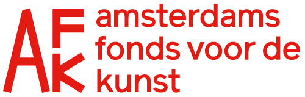
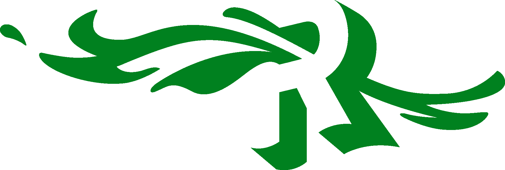
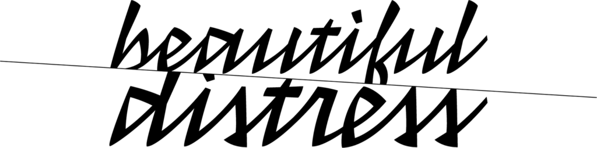
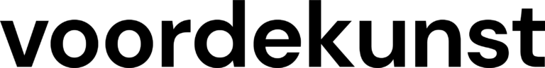
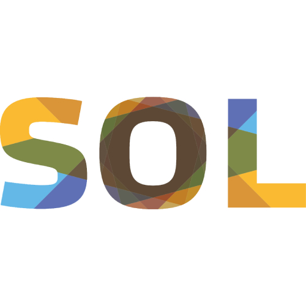
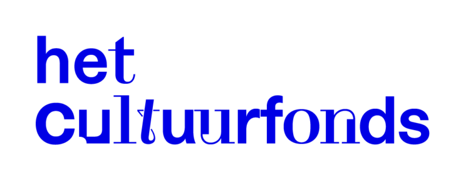
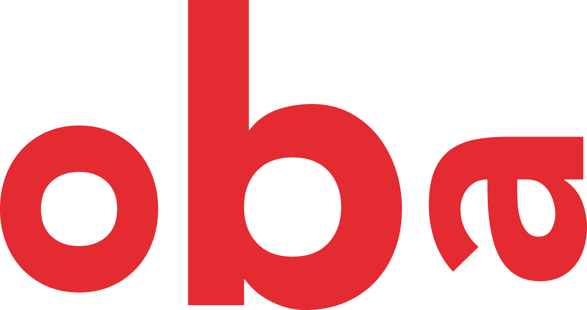
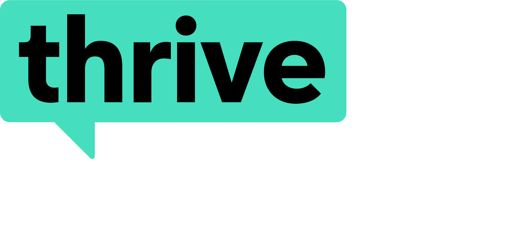

het
Onderwater
Theater
Een korte stop-motion kinderfilm en educatief project dat het label verlegenheid onderzoekt.
Een korte stop-motion kinderfilm en educatief project dat het label verlegenheid onderzoekt.







